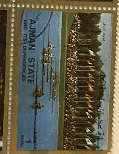
| SOURCE | TITLE| IMAGE MATCH | click to source page |
| rowing-memorabilia.de | Stamps by Countries - AJMAN | 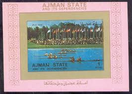 |
| rowing-memorabilia.de | Identified Athletes S-T-U | 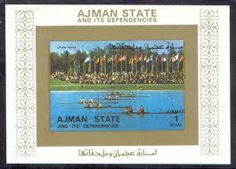 |
| rowing-memorabilia.de | Stamps by Year - 1972 | 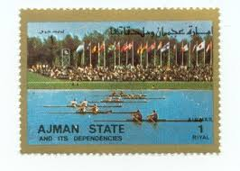 |
| Alamy | Olympic symbol archery hi-res stock photography and images - Alamy | 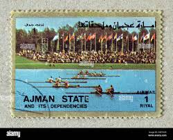 |
| eBay | 1 Airmail Riyal, Briefmarke | eBay | 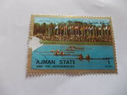 |
| Dreamstime.com | Isolated Ajman State Stamp editorial stock image. Image of issue - 389293674 | 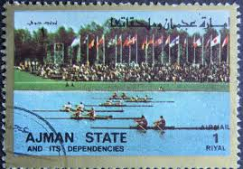 |
| Shutterstock | 2+ Hundred Polo Postage Stamp Royalty-Free Images, Stock Photos & Pictures | Shutterstock | 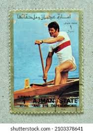 |
| Dreamstime.com | Isolated Ajman State Stamp editorial photography. Image of correspondence - 351018422 | 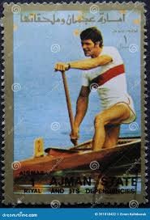 |
| Dreamstime.com | 126 History Olympic Swimming Stock Photos - Free & Royalty-Free Stock Photos from Dreamstime | 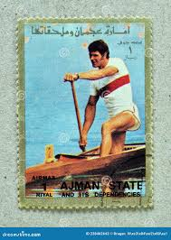 |
| eBay | Umm-Al-Qiwain Sport rowing 3D stamp 1969 MLH B-3 | eBay | 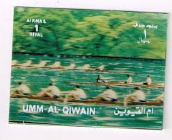 |
| rowing-memorabilia.de | Stamps by Year - 1976 | 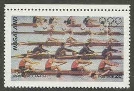 |
| Amazon.in | Mahaphilla India 1982 IX Asian Games Delhi Commemorative Mint/MNH Set of 2 Block of 4 with Traffic Light Stamps for Collection Multicolor : Amazon.in: Toys & Games | 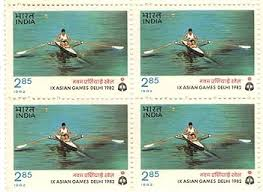 |
| rowing-memorabilia.de | Stamps by Year - 1981 - 1990 | 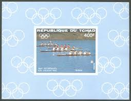 |
| Freestampcatalogue.com | Stamps from Algeria - Freestampcatalogue.com - The free online stampcatalogue with over 500.000 stamps listed. | 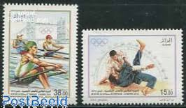 |
| Find Your Stamps Value | Republic of India: Cycling - भारत गणराज्य: साइकिलिंग 50p Multicolored stamp price, value | 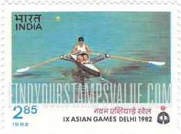 |
| eBay | Chad Boats 1984 (16) Block Yvert No. 47 Canceled Used | eBay | 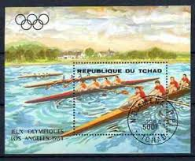 |
| Mystic Stamp | 1793 - 1979 15c 22nd Summer Olympics: Rowers - Mystic Stamp Company | 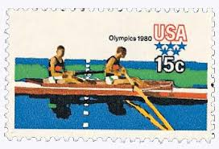 |
| Alamy | INDIA - CIRCA 1982: stamp printed by India, shows football players, circa 1982 Stock Photo - Alamy | 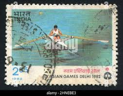 |
| Wikipedia | Reinhard Eiben - Wikipedia | 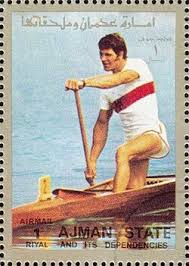 |
| Avion Thematics | Avion Thematics Stamps | Search for stamps on Canoeing | 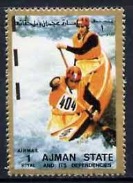 |
| Alamy | A stamp printed in SHARJAH (UAE) shows a brown thoroughbred horse from series: Horses, circa 1980 Stock Photo - Alamy | 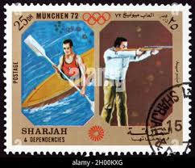 |
| Dreamstime.com | 816 Chad Stamp Stock Photos - Free & Royalty-Free Stock Photos from Dreamstime | 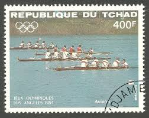 |
| rowing-memorabilia.de | Olympic Regattas - 1984 Los Angeles | 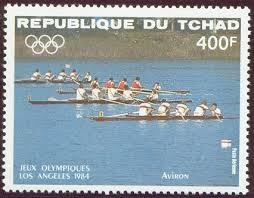 |
| eBay | Chad #C271-C274 Mint Hinged, Olympics (SCV=$10) | eBay | 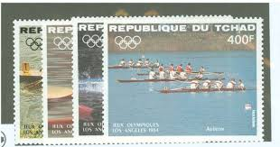 |
| eBay | 1991-2000 Year of Issue Postal Stationery for sale | eBay | 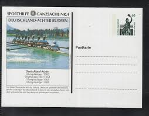 |
| rowing-memorabilia.de | Stamps by Year - 1961 - 1970 | 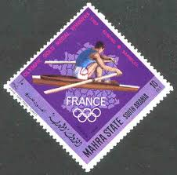 |
| Worldwidemint | In Stock – Page 202 – Worldwidemint | 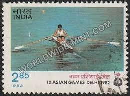 |
| Dreamstime.com | AJMAN - 1972: Shows President of USA Franklin D. Roosevelt 1882-1945, Series Figures from the Second World War Editorial Photo - Image of correspondence, figure: 74727656 | 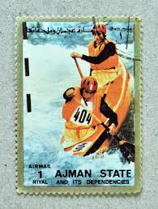 |
| Shutterstock | 2+ Thousand Asian Athlete Medal Royalty-Free Images, Stock Photos & Pictures | Shutterstock | 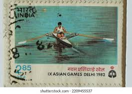 |
| Dreamstime.com | Letter Water Editorial Images: Over 5,708 Stock Photos - Dreamstime | 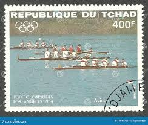 |
| rowing-memorabilia.de | Olympic Regattas - 1988 Seoul | 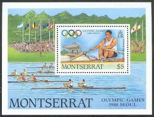 |
| eBay | SB) 1984 CHAD, 1984 SUMMER OLYMPICS, KAYAK SCENE, SCT C275, SOUVENIR MNH | eBay | 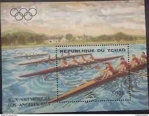 |
| Shutterstock | Sport Stamps: Over 33,165 Royalty-Free Licensable Stock Photos | Shutterstock | 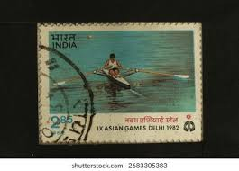 |
| rowing-memorabilia.de | Stamps issued unauthorized | 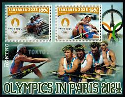 |
| GetArchive | 18 Drawings on stamps of germany, German stamps review Images: PICRYL - Public Domain Media Search Engine Public Domain Search | 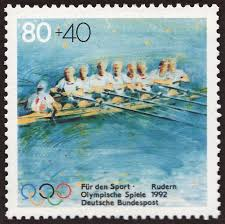 |
| iStampGallery | Asian Games Archives - iStampGallery | 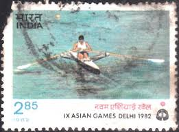 |
| Shutterstock | Ajman 1973 March 31 1 Riyal Stock Photo 2530255435 | Shutterstock | 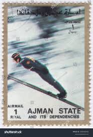 |
| rowing-memorabilia.de | Identified Athletes - ITA | 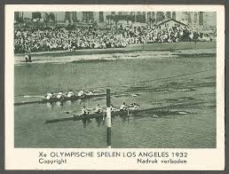 |
| CollectorBazar | India 1982 Asian Games Rowing Traffic Light Colour Code Mint PC54731 | 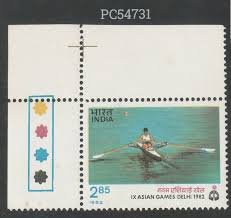 |
| WHERE THAMES SMOOTH WATERS GLIDE | 1940s Henley Regatta - WHERE THAMES SMOOTH WATERS GLIDE | 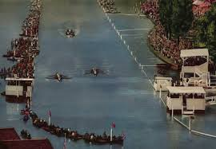 |
| WorthPoint | The Vesper Boat Club, Philadelphia PA Boathouse Row 1964 Olympic Tray 100th Ann. | #1627672516 | 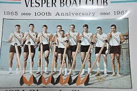 |
| Shutterstock | Emblem Fitness: Over 4,046 Royalty-Free Licensable Stock Photos | Shutterstock | 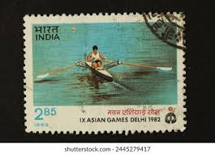 |
| Shutterstock | Munich Stamp: Over 1,861 Royalty-Free Licensable Stock Photos | Shutterstock | 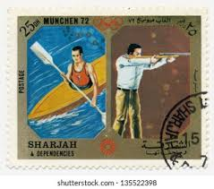 |
| Shutterstock | 1984: Over 19,430 Royalty-Free Licensable Stock Photos | Shutterstock | 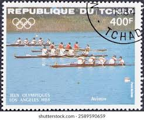 |
| eBay | CHAD TSCHAD 1984 1056-59 Block 221 Olympia Olympics Los Angeles 2er Kajak MNH | eBay | 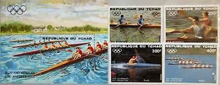 |
| eBay | Tschad 1056/59 Block 221 postfrisch / Olympiade ......................... 2/3698 | eBay | 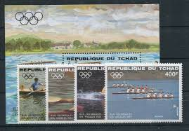 |
| HipStamp | US SC 1335 * Thomas Eakins Painting Block of 4 * MNH * 1967 | United States, General Issue Stamp / HipStamp | 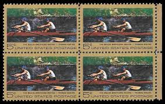 |
| Alamy | The biglin brothers racing hi-res stock photography and images - Alamy | 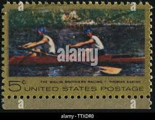 |
| eBay | Chad C271-C274,C275, CTO. Mi 1056-1059, Bl.221. Olympics Los Angeles-1984.Kayak. | eBay | 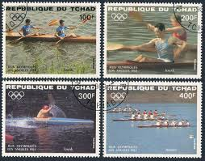 |
| Shutterstock | 2+ Hundred Ix Asian Games Royalty-Free Images, Stock Photos & Pictures | Shutterstock | |
| Alamy | Yemen circa 1972 stamp printed hi-res stock photography and images - Alamy | |
| eBay | AR273 IMPERF 1971 AJMAN OLYMPIC GAMES MUNCHEN 1972 SPORT 6BL MNH | eBay | |
| rowing-memorabilia.de | Olympic Regattas - 1936 Berlin | |
| eBay | 1335 EASKINS FDC WASHINGTON, DC COLORANO PRE-SILK MAXIMUM CARD | eBay | |
| eBay | Olympics Equatorial Guinean Stamps for sale | eBay | |
| YouTube | MUNICH 1972 Men's Kayak Fours, 1000m - YouTube | |
| eBay UK | Algeria - 2012 - London Olympic Sports - Set of 2 Stamps - MNH | eBay UK | |
| eBay | USA5 #C105 U/A COLORANO SILK 4 FDC Combo2 Shot Put Summer Olympics | eBay | |
| Row2k | 2008 Olympic Games - Sunday Eights Finals - Rowing photos | row2k.com | |
| Alamy | Ajman stamp hi-res stock photography and images - Page 5 - Alamy |